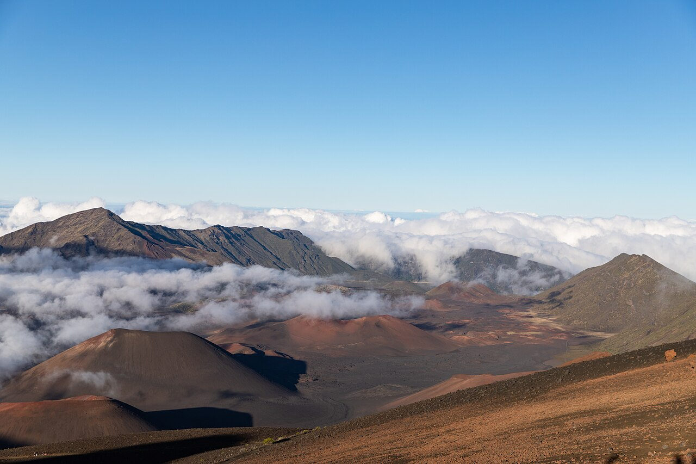

Maui from Kīhei · 5-day family itinerary
Four nights in Kīhei, one reserved slot at ʻĪao Valley, a Haleakalā summit day packed for weather about 17°C colder than the beach, and a flexible aquarium day kept next to it so the two can trade places if the summit forecast turns.

Photo: dronepicr, Summit of Mount Haleakala Crater Maui Hawaii, CC BY 2.0, via Wikimedia Commons.
.jpg){kind=link}
Checked before you commit
This illustrative route lands at Kahului, stays four nights in Kīhei on Maui’s south shore, and keeps the Haleakalā summit day next to a flexible aquarium-and-boardwalk day so they can trade places. The National Park Service’s Haleakalā pages, Hawaiʻi State Parks’ ʻĪao Valley pages, Maui Ocean Center’s pages, Park Maui’s beach-parking page and the state’s lifeguarded-beach list were checked on 22 October 2026. Nothing was booked.
Day 1 lands at Kahului and settles into Kīhei. Day 2 drives back north for a reserved morning slot at ʻĪao Valley. Day 3 climbs Haleakalā by daylight with short walks at the top. Day 4 stays close to base, with the Keālia boardwalk and the aquarium at Māʻalaea. Day 5 is a beach morning and the flight out.
One anchor a day for a twelve-year-old and a nine-year-old, from one base, so nobody repacks. The summit day is the long one: the park gives about 2.5 hours to the summit from Kahului and 3 hours from Wailea. Kīhei sits between them, so we plan on close to 3 hours each way. The decision about tomorrow is made at dinner.
The Kīhei stay, the hire car, the ʻĪao Valley slot and the aquarium tickets were not checked for your dates. US dollar figures are the prices on official pages on 22 October 2026 and are not converted. A booking-hub link is intent only. It doesn’t hold a slot, a room or a car.
Planning boundary: dates are illustrative; the worked example runs Monday 12 to Friday 16 July 2027. On 22 October 2026, the park listed the Summit District open, with a sunrise reservation needed from 3 am to 7 am. A Hawaiʻi State Parks notice of 19 October 2026 said Maui’s state parks had reopened after Hurricanes Nolo and Lowell, except Polipoli. Alfred doesn’t check the summit forecast, park reservations or roads. Book opens a partner checkout; it doesn’t prove a booking.
Route and family-coordination brief
Party: two adults, one twelve-year-old and one nine-year-old. Base: four nights in Kīhei. Pace: moderate, one anchor a day. Budget input: Mid Range. Published fees appear only where an official page states them; nothing is totalled as a family quote.
Getting around: plan on a hire car. The park says public transport doesn’t reach either district of Haleakalā National Park, and there is no fuel in the park. The last fuel on the way up is in Pukalani. There are no electric-vehicle chargers in the park, and the park says even fully charged electric vehicles have failed to reach the summit, so we would hire a petrol car for this trip.
Haleakalā’s private-vehicle pass is US$30, covers everyone in the car for three days and is paid by card at the entrance; the park doesn’t take cash. Entry between 3 am and 7 am needs a separate sunrise reservation. This plan arrives after 7 am, so it doesn’t need one.
If you want sunrise instead: reservations cost US$1 per vehicle on recreation.gov, open 60 days ahead at 7 am Hawaiʻi time, with some released two days ahead, and one per three-day period. They are not refunded or exchanged for weather. By our conversion, 7 am in Hawaiʻi in May is 3 am the next day in Melbourne or Sydney.
Two places run on reservations or paid parking. ʻĪao Valley needs an online reservation for out-of-state visitors, up to 30 days ahead: US$5 a person (children 3 and under free) plus US$10 for parking. At Kamaʻole Beach Parks I and III, visitors pay US$10 a day or US$50 a week to park, and the paved lots are for residents only before 10 am on weekends and County holidays.
Day 1 — Land at Kahului, settle into Kīhei, first swim at Kamaʻole III
Land at Kahului (OGG), collect the hire car and drive south to Kīhei. Buy breakfast supplies and snacks for the summit day on the way, since the park sells no food. Check in, then walk the kids to the beach while everyone is still on travel time.
Kamaʻole Beach Park III on South Kīhei Road suits a first afternoon. Park Maui lists a lifeguard station, a playground swing set, outdoor showers and park hours of 7 am to 8 pm. The state’s lifeguarded-beach list gives lifeguard hours at Kamaʻole 1, 2 and 3 of 8 am to 4.45 pm daily, so swim near the tower while it is staffed.
Fallback: if the flight lands late, skip the beach, eat near the base and keep the swim for Day 5.
Live-check: the beach’s hazard rating and lifeguard schedule on the state’s ocean-safety pages; visitor parking at the Kamaʻole III lot through a pay station or the Park Maui app.
Day 2 — A reserved morning slot at ʻĪao Valley, then an early night
Drive north past Kahului to Wailuku and ʻĪao Valley State Monument for a morning slot. The park is open 7 am to 6 pm, with last entry at 5 pm. Arrive within the first 30 minutes of your slot or you may be turned away, and leave by the end of it. Hawaiʻi State Parks says a typical visit lasts 30 to 60 minutes.
The paved 0.6-mile (about 1 km) walk leads to a viewpoint of Kukaʻemoku, the ʻĪao Needle, which rises 1,200 feet (about 365 metres) from the valley floor. A short loop through the ethnobotanical garden shows plants brought by the Hawaiians who settled the valley. Have lunch in Wailuku, then spend a slow afternoon back in Kīhei.
Tonight’s decision: open the summit forecast the park links from its weather page, and its summit webcam. If the top looks wet and windy for tomorrow, swap Day 3 and Day 4.
Fallback: ʻĪao reservations are not refunded for rain, only for an official closure. In rain, keep the slot and shorten the walk. Changes are allowed until midnight Hawaiʻi time the day before, if space is available.
Live-check: the Hawaiʻi State Parks notices page on the morning; your slot time and parking ticket.
Day 3 — Haleakalā summit by daylight, packed for the top
Leave Kīhei after breakfast with a full tank (top up in Pukalani), packed lunches, water bottles and warm layers for everyone. The park says the 10,023-foot (3,055-metre) summit runs about 17°C (30°F) colder than the coast. Year-round, it ranges from below freezing to highs of 10 to 18°C, and wind chill makes it feel colder. Pack long pants, jackets, hats, sunscreen and rain gear.
Inside the park, the drive from the entrance to the summit takes about 30 minutes. Stop at Leleiwi Overlook for a 0.3-mile (0.48 km) round-trip walk to a crater view. At the Haleakalā Visitor Center, climb the 0.4-mile (0.64 km) Pā Kaʻoao trail. The first overlook on Keoneheʻeheʻe (Sliding Sands) is a 0.5-mile round trip. The park says to allow twice as long coming back up.
Drive on to the summit at Puʻuʻulaʻula, then stop at Hosmer Grove on the way down for its 0.54-mile (0.87 km) loop, where native honeycreepers live, and eat the packed lunch. The summit is sacred to Native Hawaiians, so keep voices low. Expect to be back in Kīhei in the early evening.
Fallback: if anyone gets a headache, nausea, dizziness or shortness of breath, which the park lists as signs of altitude sickness, go back down. Emergency medical help is at least an hour away. If cloud fills the crater, cut the walks and keep Hosmer Grove.
Live-check: the park’s alerts page; the summit point forecast and webcam the night before and at breakfast. The park asks pregnant travellers and anyone with heart or respiratory conditions to consult a doctor before visiting the summit area.
Day 4 — Keālia boardwalk and the aquarium at Māʻalaea: the swap day
Start at the Keālia Coastal Boardwalk, off North Kīhei Road between Kīhei and Māʻalaea, for wetland birds over Keālia Pond. The Friends of Keālia Pond list it as open seven days a week from sunrise until 7 pm. The refuge’s visitor centre is a separate site with weekday hours.
After lunch, go to Maui Ocean Center at Māʻalaea. It is open 9 am to 5 pm with last entry at 4 pm, and says an average visit takes 2 to 3 hours with the Sphere show. Its FAQ says mornings through lunch are busiest and suggests 1 pm or later. Admission started at US$49.95 for adults (13–64) and US$39.95 for children (4–12), before tax, with a pricing calendar.
Park in the lot in front of the aquarium. Māʻalaea Triangle charges visitors a parking fee, paid by the QR code on the parking signs, not at the aquarium gate.
Fallback: this is the swap day. If you moved the summit here, do this day on Day 3 instead. The aquarium is indoors, so it also covers a rainy day.
Live-check: the aquarium’s pricing calendar for your date; boardwalk opening hours, which differ slightly between the refuge’s own pages.
Day 5 — Beach morning at Kamaʻole, car back, fly out of Kahului
Pack before breakfast, then spend the morning at Kamaʻole Beach Park I or II while the lifeguard tower is staffed. Use the outdoor showers before the drive. Return the hire car at Kahului with time for check-in, and keep a dry change of clothes in hand luggage.
Fallback: with an early flight, skip the beach and have breakfast near the base instead.
Live-check: your flight time; the hire company’s return rules and fuel policy; parking at the Kamaʻole lots (residents only before 10 am on weekends and County holidays).
Planning notes
Dates are illustrative. At decision time, recheck the park’s alerts and summit forecast, the ʻĪao Valley reservation rules, Hawaiʻi State Parks notices, the aquarium’s hours and prices, beach parking and lifeguard schedules, and your hire-car terms. A travelling profile is required, and the adults, children and ages Alfred plans for come from the travellers on that profile.
On web Lets Go, Holiday takes origin, destination, dates, a budget step and a day pace, then Plan my trip queues the itinerary. Moderate day pace fills a morning and an afternoon slot, with lunch and dinner. The Estimated costs bar, when it appears, is a rounded median of flight-and-hotel packages, not a quote.
While the trip is still Planning, you can keep or change the hotel and then the flights Alfred picked. Holiday takes one destination. We did not test which Maui place names city search offers.
Once the trip is ACTIVE, you can edit an item’s title, times and notes, so “Haleakalā — check the summit forecast at 7 pm; if wet and windy, swap with Thursday” can sit on the card. In Hey Alfred you can ask to swap two full days, and you confirm before it is applied. Book opens a partner checkout for flights and hotels, activities, eSIMs and travel insurance. It doesn’t check the summit forecast or park reservations.
Plan a trip
Start with your people, dates and pace, then review the editable plan before booking.
Plan a trip